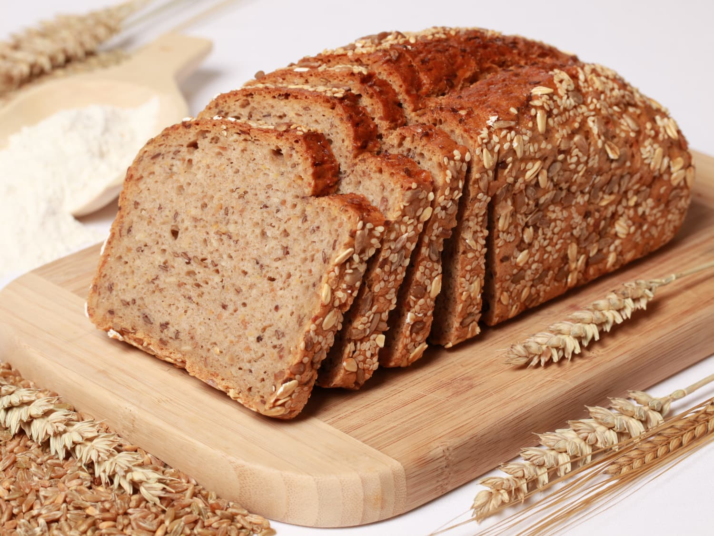

Odin's Recipe Realm
Embark on a Culinary Journey with Odin's Recipe Realm: Where Flavor Meets Adventure!
-
Chicken Noodle Soup
"This chicken soup recipe is a warm and comforting hug in a bowl with tender chicken, savory broth, and fresh vegetables, creating a delightful culinary experience." -Sarah
-
Lasagna
"This lasagna recipe from Odin's Recipe Realm is an absolute delight - layers of cheesy goodness and savory sauce, a taste that takes me straight to Italy!" -Antonio

-
Whole Wheat Bread
"This whole wheat bread recipe is a wholesome delight - a perfect blend of nutty flavors and soft texture, making it a new favorite for my family!" -Donna
